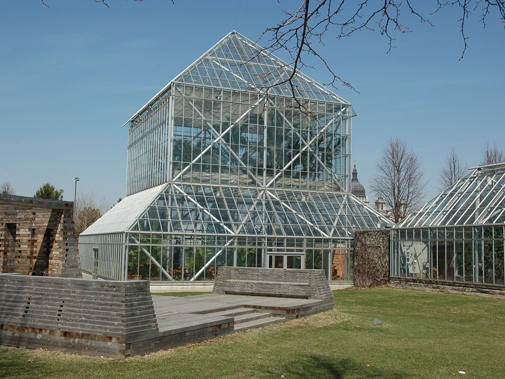
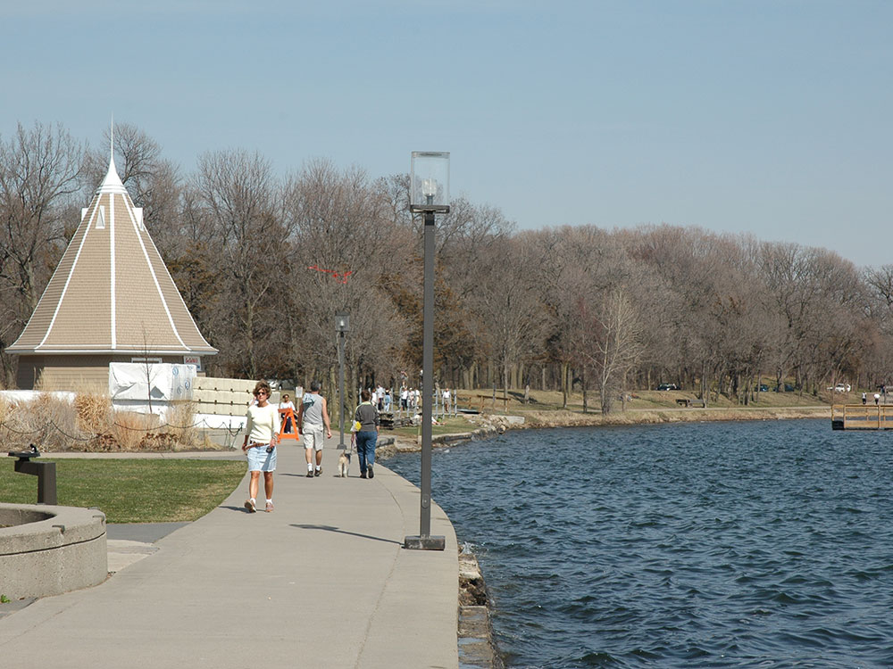
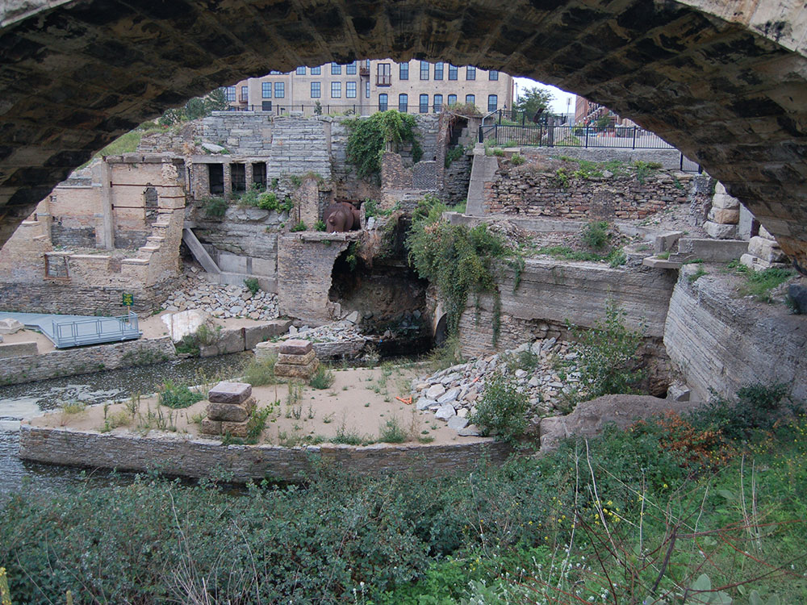
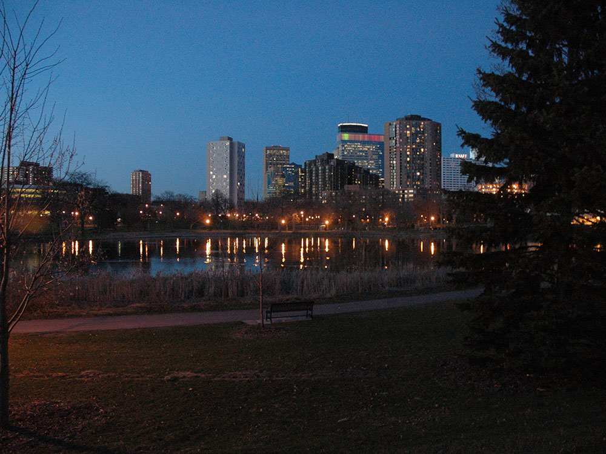

Linked series of park areas that takes a roughly circular path through the city
General Information
Undeveloped areas: 6am to 10pm
Parking fees may apply at some locations
Summer and fall are the most popular seasons for biking, walking, sightseeing, and enjoying the Chain of Lakes and Minnehaha Falls
How to Get There
From Minneapolis (0 mi): Take West River Road or any of the connecting parkways within Minneapolis to access the Grand Rounds National Scenic Byway, a 55-mile interconnected system of scenic parkways, trails, lakes, riverfronts, and parks surrounding the city.
Overview
The Grand Rounds National Scenic Byway is a linked series of park areas in Minneapolis, that takes a roughly circular path through the city. The corridors include roads for vehicle traffic plus separate paths for pedestrians and bicycles, and extend slightly into neighboring cities. About 50 miles (80 km) of roadway and paths are in the system, and much of it was built in the 1930s as part of Civilian Conservation Corps projects.
Things to Do
Explore One of America's Great Urban Park Systems
The Grand Rounds National Scenic Byway is a unique 51-mile network of parkways, lakes, trails, and parklands that circles and connects many of Minneapolis' most beautiful natural and cultural attractions. Developed through the vision of landscape architect Horace Cleveland and the Minneapolis Park and Recreation Board, the byway is often considered one of the finest urban park systems in the United States.
Visit Minneapolis' Chain of Lakes
A highlight of the Grand Rounds is the Chain of Lakes, which includes Bde Maka Ska, Lake Harriet, Lake of the Isles, Brownie Lake, and Cedar Lake. Visitors can enjoy walking, biking, paddling, fishing, swimming, picnicking, and scenic lakefront views throughout the year.
Explore the Mississippi River Corridor
The byway follows significant portions of the Mississippi River through Minneapolis, providing access to riverfront parks, historic sites, overlooks, and trails. Visitors can experience St. Anthony Falls, the Stone Arch Bridge, and numerous scenic viewpoints while learning about the river's role in the city's development.
Enjoy Minnehaha Park and Minnehaha Falls
One of the most popular destinations along the Grand Rounds is Minnehaha Regional Park, home to the 53-foot Minnehaha Falls. The park features walking trails, gardens, limestone bluffs, and access to the Mississippi River, making it a favorite destination for visitors and residents alike.
Experience Recreation in Every Season
The Grand Rounds offers outstanding opportunities for walking, biking, running, rollerblading, birdwatching, photography, cross-country skiing, and snowshoeing. More than 50 miles of connected trails allow visitors to explore much of Minneapolis without leaving the park system.
Top Trails
Grand Rounds Trail System
Length: Approximately 51 miles
Elevation Gain: Minimal to Moderate
Difficulty: Easy
The signature route follows the entire Grand Rounds parkway system, connecting lakes, rivers, parks, and neighborhoods throughout Minneapolis. It is widely regarded as one of the premier urban cycling and walking networks in America.
Chain of Lakes Trail
Length: Approximately 15 miles connected network
Elevation Gain: Minimal
Difficulty: Easy
This highly popular trail system circles Minneapolis' most famous lakes and provides beautiful waterfront scenery, beaches, parks, and recreational opportunities for walkers, runners, and cyclists.
Minnehaha Creek Trail
Length: Approximately 5 miles through Minneapolis
Elevation Gain: Minimal
Difficulty: Easy
Following Minnehaha Creek toward Minnehaha Falls, this trail passes wooded areas, parklands, bridges, and scenic waterways while offering a relaxing outdoor experience within the city.
Mississippi River Trail (MRT)
Length: Variable distances available
Elevation Gain: Minimal
Difficulty: Easy
Sections of the Mississippi River Trail overlap with the Grand Rounds, providing scenic views of the river, historic landmarks, and access to parks and cultural attractions throughout Minneapolis.
Sources: Minneapolis Park and Recreation Board information regarding the Grand Rounds Scenic Byway, trail system, Chain of Lakes, Minnehaha Park, and recreational opportunities. https://www.minneapolisparks.org
Additional information verified through National Scenic Byways and National Park Service resources covering the Grand Rounds National Scenic Byway, Mississippi River connections, urban park history, and trail network amenities throughout Minneapolis.
There are seven districts along the byway:
Downtown Riverfront lies along the Mississippi River, and includes Saint Anthony Falls and nearby historic milling districts. The byway follows West River Parkway, beginning at Plymouth Avenue, passing Boom Island Park and Nicollet Island Park (both across the river), and Mill Ruins Park, adjacent to the Mill City Museum and the Stone Arch Bridge.
Mississippi River gorge area extends from downtown Minneapolis to Minnehaha Park. The byway follows West River Parkway, and passes the west bank of the University of Minnesota. After Franklin Avenue there are multiple access points from the byway to the adjacent Winchell Trail. Several bridges connect the byway with trails on the east bank, in both Minneapolis and Saint Paul. Portions of this section of the route are also part of the signed Mississippi River Trail (MRT) bicycle route.
Minnehaha including Minnehaha Park, Minnehaha Creek, Lake Nokomis and Lake Hiawatha. The byway follows Godfrey Parkway through Minnehaha Park, past Minnehaha Falls and the Longfellow House information center. Crossing Hiawatha Avenue, the route becomes Minnehaha Parkway. The road passes between Lakes Nokomis and Hiawatha, and then follows Minnehaha Creek to Lake Harriet.
The Chain of Lakes includes seven parks, and its name dates back to the 19th century, when an article referred to "the chain of lakes which, 'like a necklace of diamond in settings of emerald,' enriches Minneapolis." The Chain of Lakes district consists of Lake Harriet, Lyndale Park, Lyndale Farmstead, Bde Maka Ska, Lake of the Isles, Cedar Lake and Brownie Lake.
Theodore Wirth (extending into Golden Valley) consists of Theodore Wirth Park. The byway follows Cedar Lake Parkway as it crosses Interstate 394 and becomes Theodore Wirth Parkway. Heading north, it passes the Eloise Butler Wildflower Garden, and Wirth Lake. Crossing Olson Memorial Highway, the parkway enters Theodore Wirth Golf Course.
Victory Memorial includes the northwestern edge of Minneapolis. The byway follows Victory Memorial Parkway, which commemorates the contributions of people from Hennepin County in World War I. Victory Memorial Parkway becomes Weber Parkway. The byway follows the Camden Bridge across the Mississippi River, which marked the head of navigation for barge traffic on the river until the lock at Upper Lock and Dam was taken out of service.
Northeast runs through Northeast Minneapolis. The byway follows St Anthony Parkway to Stinson Parkway, and follows that road south to Ridgway Parkway. It passes Columbia Park and Deming Heights Park, and terminates at Francis Gross Golf Course.
The Grand Rounds trail system features approximately 50 miles (80 km) of off-street paths for bicycles and pedestrians that make a continuous loop around Minneapolis.
- Memorial and Webber Parkways—3.85 miles (6.20 km)
- Wirth Parkway—3.54 miles (5.70 km)
- Dean Parkway—0.59 miles (0.95 km)
- William Berry Parkway—0.56 miles (0.90 km)
- Minnehaha Creek—4.93 miles (7.93 km)
- Godfrey Parkway—0.5 miles (0.80 km)
- West River and James I. Rice Parkways—7.25 miles (11.67 km)
- East River Parkway—approximately 2.1 miles (3.4 km)
- St. Anthony Parkway—2.8 miles (4.5 km)
- Stinson Parkway—0.95 miles (1.53 km)
- Ridgeway Parkway—0.75 miles (1.21 km)
- Lake Nokomis—2.7 miles (4.3 km)
- Lake Harriet—2.75 miles (4.43 km)
- Bde Mka Ska (formerly Lake Calhoun)—3.1 miles (5.0 km)
- Lake of the Isles—2.6 miles (4.2 km)
- Cedar Lake—1.68 miles (2.70 km)
This article uses material from the Wikipedia article "American Swedish Institute", which is released under the Creative Commons Attribution-Share-Alike License 3.0






